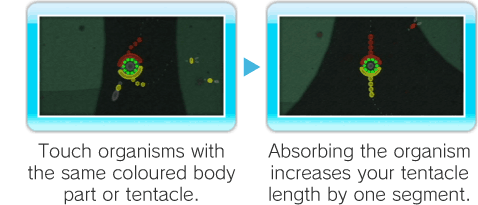
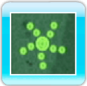

Move around using

. Press

to rotate anticlockwise or

to rotate clockwise.
-
Lengthening Tentacles
Touching other organisms with the same colour tentacle or body part increases the length of that tentacle. It also
improves your score in Endless Mode and Snake Mode. Rotating skilfully is the key to matching your tentacles with the right organisms.

-
Damage
Your organism receives damage if a body part or tentacle touches an organism of a different colour. When damaged, you lose a life and the tentacle breaks at
the contact point.

Note: If a segment cluster is damaged, the segments will be released to their original length but the tentacle will not break. However, you will still
lose a life.
-
Game Over
Your game ends when you lose all of your lives. Select one of the following options from the Game Over Screen.
|
MENU
|
Return to the Main Menu.
|
|
RETRY
|
Restart the current mode or stage.
|
-
Items
The following three items can be found during play.
-
Heart Item
The Heart item restores a life.

-
Cyclone Item

When you pick up a Cyclone item you will be encircled by an energy ball
which allows you to perform a Cyclone.
-
Constriction Item
(Endless Mode and Snake Mode only) Constriction items shorten the tentacle they touch.
There are three types with different strengths that can restrict 5, 10 or 20 segments.

Cyclones
Cyclones allow you to absorb every organism that you hit for a limited time. Get a Cyclone item and follow the steps below to perform a Cyclone.

 All organisms hit are absorbed during a Cyclone. After a limited time, the Cyclone will end and the quantity of absorbed organisms will be
added to the relevant tentacles.
All organisms hit are absorbed during a Cyclone. After a limited time, the Cyclone will end and the quantity of absorbed organisms will be
added to the relevant tentacles.